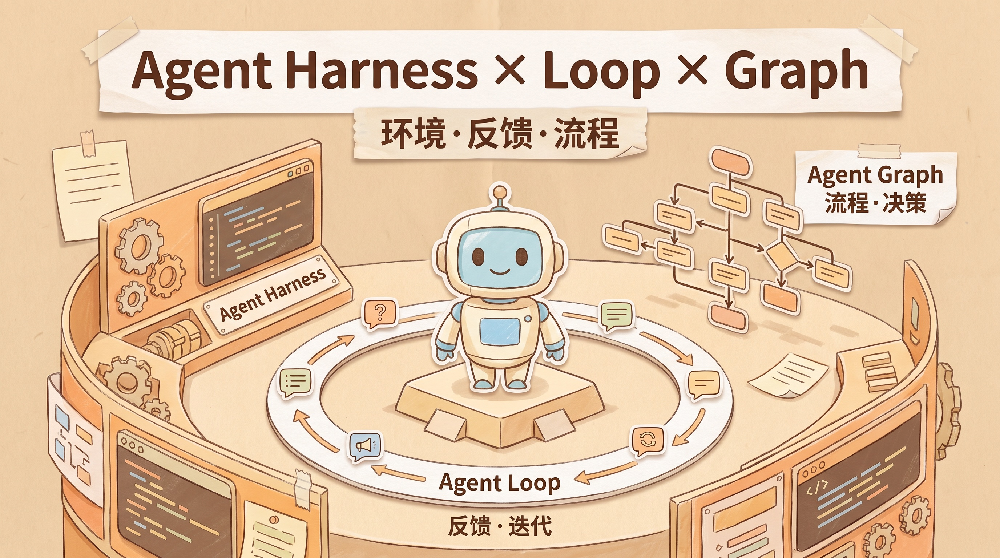
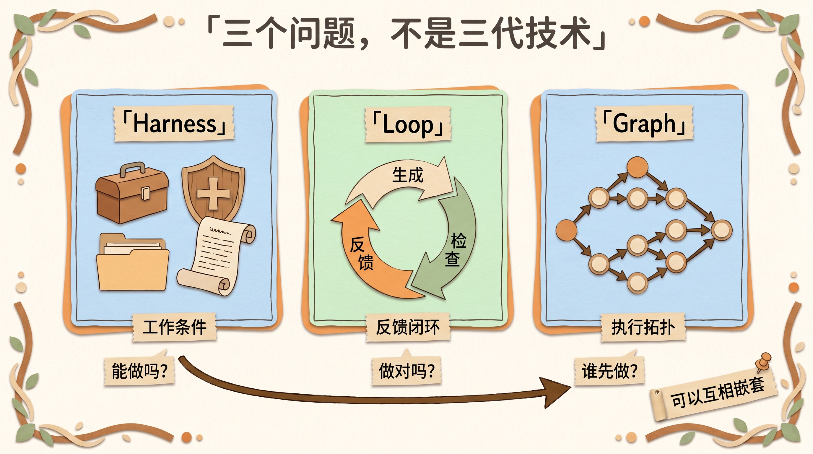
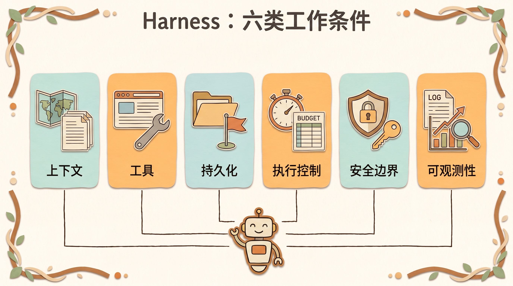
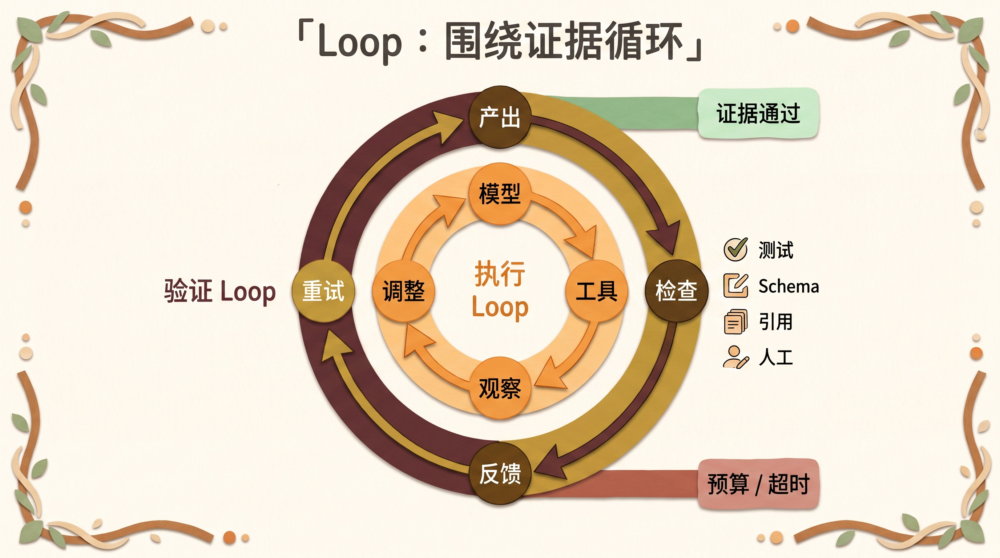
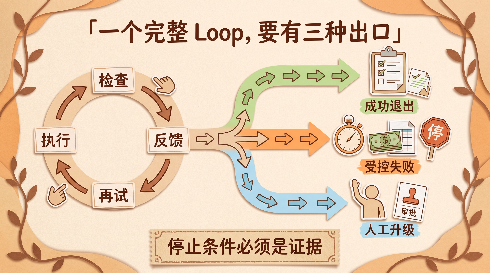
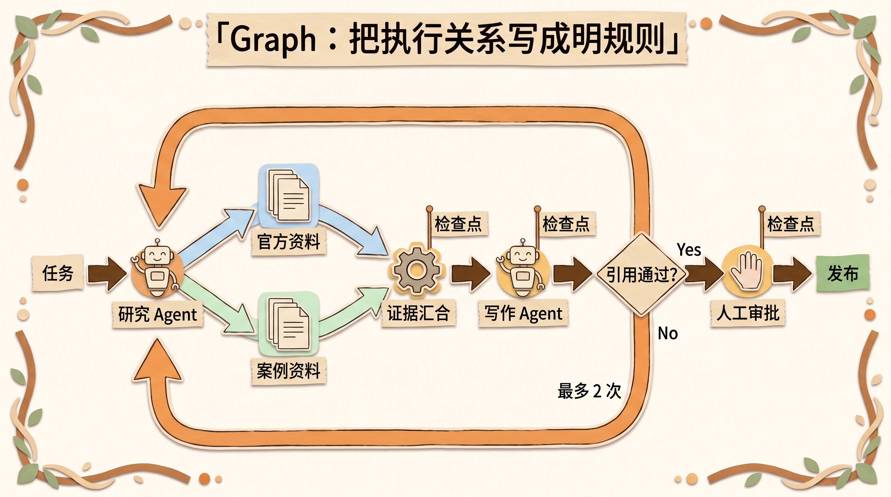
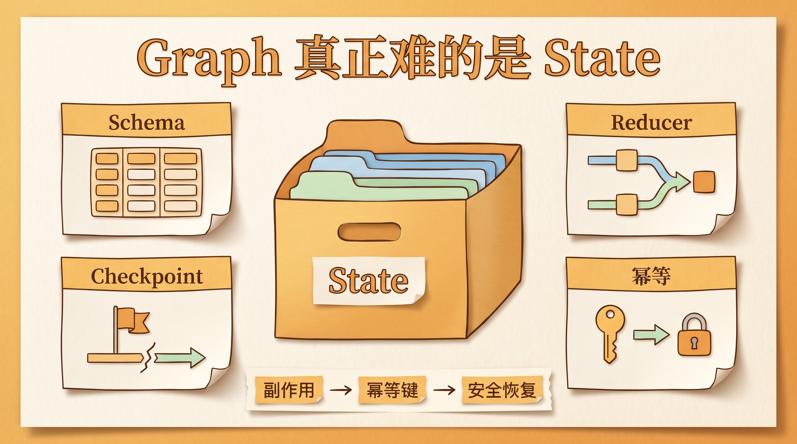
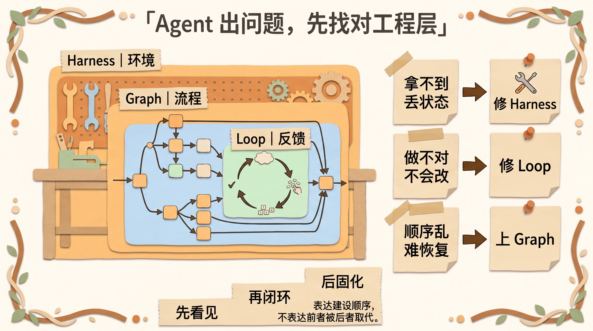

Agent Harness、Loop、Graph：别再把三种 Agent 工程混成一件事
写这篇文章时，配图连续出了两次错。
第一张 Harness 信息图，把「执行控制」画了两遍。
第二张 Graph State 图，四个主标签都对，却擅自补了一段看起来专业、实际不严谨的小字。
有意思的是，两次调用都返回成功。文件存在，尺寸正确，画面也挺漂亮。只看 API 状态，任务已经结束；真的把图打开，才知道事情还没做完。
我后来重写提示词、保留正确版本，再生成、再检查。折腾完这两轮，我突然发现，最近社区里那句「我们还在做 Loops，还是已经该转向 Graphs 了」其实问错了。
图片模型、参考图、文件系统和权限，决定 Agent 有没有条件完成任务，这是 Harness。
发现重复标签，把证据退回去，再生成一版，这是 Loop。
研究、写作、事实核查、配图、验收、同步到 Obsidian 的先后关系，则是一条执行 Graph。
它们从来不是三选一。
最近 Graph Engineering 这个词开始变热，看上去像是 Agent 工程的下一代范式。但我把 OpenAI、Anthropic、LangGraph 和 AutoGen 的官方资料重新翻了一遍，判断反而越来越明确：
Graph 没有取代 Loop，Loop 也没有取代 Harness。
它们分别处理工作条件、反馈闭环和执行关系。
环境、反馈、流程。
先记住这六个字，后面的新名词就不容易把人带跑。
这里说的 Graph，特指组织 Agent、工具、代码和人工节点的执行图，不是知识图谱。Graph Engineering 目前也更像社区对一类实践的概括，还没有被行业共同接受的标准定义。

三个概念，先用 30 秒分开
裸模型的一次推理可以生成文本、结构化输出，甚至提出工具调用意图。
但它不会替应用真正执行工具，也不会天然拥有项目文件、打开浏览器、保存跨会话进度。测试失败后应该重试、回滚，还是停下来找人，同样要由模型外部的运行时决定。
Agent 能真正做事，靠的是模型外面的系统。
问题就在这里。模型外面的东西很多，大家又喜欢统一叫「Agent 编排」，于是工具、权限、反馈、状态机、多 Agent 协作全被塞进同一个词里。
我更愿意把它们拆成三种工程抓手。
| 工程切面 | 它回答的问题 | 典型组成 |
|---|---|---|
| Harness Engineering | Agent 在什么工作条件里运行 | 工具、文件系统、上下文、记忆、权限、沙箱、日志、模型路由 |
| Loop Engineering | 一轮做完以后怎么办 | 观察、证据、反馈、重试、预算、停止条件、人工复核 |
| Graph Engineering | 当前步骤结束后，下一步谁能运行 | 节点、边、分支、并行、汇合、状态迁移、检查点、受控回环 |
这张表是一个排障口诀，不是一堵物理隔离墙。
不同团队对 Harness 的边界会画得不一样。LangChain 甚至直接用「Agent = Model + Harness」来定义 Agent，把模型之外的代码、配置和执行逻辑都放进 Harness。按这个宽口径，Loop runtime 和 Graph scheduler 也可以算 Harness 的一部分。
所以这三个词不是三个互斥的盒子。
更像三个观察系统的角度。

Harness：先给模型一个能工作的世界
2026 年 2 月，OpenAI 发了一篇很有代表性的文章，标题就叫《Harness engineering: leveraging Codex in an agent-first world》。
文章里有一句话很准确：当工程团队不再把主要精力放在亲手写每一行代码，而是让 Agent 执行时，人类的工作会转向设计环境、表达意图，并建立让 Agent 可靠工作的反馈回路。
注意这里的重点。
不是再写一个更长的 Prompt。
而是把 Agent 周围的世界搭好。
OpenAI 那个团队把短小的 AGENTS.md 当作地图，把仓库里的结构化文档当作事实源，再用自定义 lint、结构测试和 CI 约束架构方向。Agent 能看到什么、能修改什么、如何判断自己有没有破坏系统，都被做成了仓库里可读取、可执行、可验证的东西。
Anthropic 在长任务 Harness 的实践里，也遇到了类似问题。仅靠上下文压缩，并不能让 Agent 跨越多个会话稳定推进。他们增加了初始化 Agent、进度文件、功能清单、测试和干净的工作状态，让下一轮执行知道前一轮做过什么、还有什么没有完成。
这些东西看起来不神秘。
文件、脚本、权限、测试、日志。
但它们组合起来，决定了模型是在一个秩序清楚的工程现场工作，还是被扔进一间堆满杂物的仓库里自己找扳手。
一个比较完整的 Harness，通常会覆盖六类能力。
上下文入口。 系统指令、项目地图、检索结果、任务状态、Skills 和历史决策。
行动入口。 API、Shell、浏览器、数据库、代码解释器、MCP 工具和外部服务。
持久化。 文件、会话、检查点、Git 历史、进度记录和长期记忆。
执行控制。 超时、预算、模型路由、并发、审批门和重试上限。
安全边界。 沙箱、白名单、密钥隔离、只读模式和人工授权。
可观测性。 工具输入输出、状态变化、Trace、延迟、成本和评测结果。
有一个很好用的判断方法。
把架构图里的模型暂时拿掉。
剩下的工作区、工具、状态、规则、沙箱、评测器和 UI，大多都属于 Harness。
这里还要补一个边界。
Harness 不只是摆在模型周围的一张静态资源清单，它通常还包含驱动一次 Run 的主动运行时。谁把工具结果追加回上下文，谁处理 handoff，谁控制并发和最大轮次，谁在审批点暂停，再从保存的状态恢复？这些都不是模型自己完成的。
Session、RunState、Checkpoint 和 Trace 也不能统一塞进「记忆」：Session 主要保存会话历史，RunState 记录一次被暂停的运行，Checkpoint 保存图执行进度，Trace 负责观察调用链。记得聊天、能从断点继续、外部动作不会重复、结果真的正确，是四件不同的事。
这也解释了为什么同一个基础模型，放进两套 Agent 产品里，表现会差很多。差距未必来自模型智力，更可能来自工具契约是否清楚、状态是否可靠、权限是否克制，以及失败信息能不能回到下一轮。
Harness 解决的是「它有没有条件把事情做好」。
但 Harness 也不是越厚越好。
Anthropic 在 2026 年的长任务实验里专门复盘了这个问题：每一个 Planner、Evaluator、进度文件和上下文重置机制，都隐含着一个假设——模型自己还做不好这件事。模型能力提升以后，有些原本必要的脚手架会变成额外成本，甚至干扰模型工作。
所以 Harness Engineering 还包含一项经常被忽略的工作：定期删除已经失去价值的脚手架。
一个组件该不该保留，可以问三个问题：
- 拿掉以后，哪一类可观测指标会明显变差？
- 它是在弥补稳定缺陷，还是只是在安抚我们的不安全感？
- 新模型上线后，这个假设是否还成立？
真正成熟的 Harness，不是组件最多，而是每个组件都能解释自己在防什么故障。

Loop：重点不是多跑几轮，是把结果送回系统
只要一个 Agent 会调用工具，它内部就已经有一个小循环。
模型决定下一步。
工具执行。
结果返回上下文。
模型再决定下一步。
Anthropic 对 Agent 的描述也是这个方向：模型自主决定如何使用工具和推进过程，在计划、行动、观察、调整之间反复，直到任务完成，或者需要人类介入。
但工程里常说的 Loop，往往还多了一层。
我会把它分成两种。
第一种是 Agent 内部的执行 Loop。
它解决的是「下一步做什么」。读文件、搜索、调用工具、更新计划，都发生在这里。
第二种是 系统外层的验证 Loop。
它解决的是「这一轮结果够不够好」。测试有没有通过，链接能不能访问，JSON 是否符合 Schema，引用能不能回到原文，风险操作有没有得到批准。
这两层经常被混在一起，于是 Loop Engineering 容易被误解成写一个 while true，让 Agent 一直干。
真这样做，得到的通常不是自治。
是空转。
一个能上线的 Loop，至少要写清楚这些事情：
- 什么事件触发下一轮；
- 当前目标状态是什么；
- 哪些状态必须带到下一轮；
- 允许调用哪些工具、修改哪些资源；
- 用什么证据证明成功；
- 失败信息如何压缩成下一轮可以执行的反馈；
- 什么时候因为成功而退出，什么时候因为预算、超时或不可恢复错误而退出。
这里最重要的不是循环次数。
是证据。
「Agent 觉得已经完成」不是停止条件。「测试通过、Schema 校验成功、引用可访问、审核人批准」才是。
这也是 Loop Engineering 和 Prompt Engineering 真正拉开距离的地方。Prompt 主要影响一次模型调用怎么做；Loop 负责调用结束后系统如何观察结果、生成反馈、保存进度，并决定要不要继续。
不过 Loop 也不是越多越好。
每增加一次评估、一次复核、一次重试，都会增加延迟和成本。只有失败代价高于验证代价时，这个闭环才值得加。
Loop 解决的是「它做完以后，系统怎么知道对不对」。

一个完整的 Loop，至少要有三种出口
很多 Loop 设计只写了成功条件，却没有认真设计失败。
这很危险。
OpenAI Agents SDK 的 Runner 就展示了一个最小但完整的执行边界：模型返回最终输出，循环结束；模型发起 handoff，切换当前 Agent 后继续；模型调用工具，执行工具并把结果放回上下文；如果超过 max_turns，则抛出明确的超限错误。
生产系统在这个基础上，还应该把出口分成三类。
成功退出。 验收证据满足要求，例如测试全部通过、引用存在且与原文一致、数据满足 Schema、人工批准已经写入状态。
受控失败。 达到最大轮次、预算或超时，或者连续出现同一类错误。系统停止继续消耗资源，保存现场，并返回机器可读的失败原因。
人工升级。 遇到高风险副作用、需求冲突或判断置信不足时，不是假装完成，也不是无限重试，而是暂停运行，把当前状态、已尝试方案和待决问题交给人。
这里还有一个容易被忽略的细节：失败反馈必须可行动。
「结果不够好」几乎没有价值。好的反馈应该像这样：
第 4 条引用链接可访问，但原文没有支持“性能提升 3 倍”这个数字；请删除该数字，或补充一手来源。
它指出失败对象、失败证据和允许的修复方向。下一轮不需要重新猜测评分器到底不满意什么。
如果验证器本身也是另一个大模型，也不要把它当成客观真理。Anthropic 在 Generator–Evaluator 实验里发现，让独立 Evaluator 更挑剔通常比让生成者自我批评更容易，但评估器仍然需要校准，而且依旧会漏掉深层问题。确定性检查、独立模型复核和人工审批，应该按风险组合使用。

Graph：它管的不是更聪明，而是下一步谁能运行
Graph Engineering 问的是另一个问题。
当前步骤结束以后，谁可以拿到状态，谁可以继续执行？
在一张执行图里，节点可以是一次模型调用、一个专业 Agent、一段确定性函数、一个工具调用，也可以是人工审批。边负责规定顺序、条件分支、并行展开、结果汇合、回退和退出。
LangGraph 的官方文档把一张图拆成三个核心对象。
State，当前系统状态。
Nodes，读取状态并产生更新的执行单元。
Edges，根据状态决定下一个节点。
微软 AutoGen 的 GraphFlow 也是类似思路。它用有向图控制 Agent 之间的执行，支持顺序、并行、条件分支和带安全退出条件的循环。官方给出的使用边界很克制：只有当任务需要严格控制顺序、根据不同结果走不同路径，或者包含复杂的多步骤循环时，才值得使用 GraphFlow。普通对话式协作够用时，先用更简单的 Team。
截至本文写作时，AutoGen 文档仍把 GraphFlow 标为实验性能力，API 和行为可能继续变化。用它理解设计边界没问题，拿去做长期生产依赖则需要额外评估版本风险。
这里有两个很容易踩的坑。
一个是把 Graph 等同于多 Agent。
不是。
一张图完全可以只有一个 Agent，其余节点都是代码、测试和人工审批。反过来，一个 Agent 也可以在自己的 Loop 里动态创建多个子 Agent，并不一定要提前画成固定图。
另一个是把 Graph 等同于确定性。
也不准确。
显式的边可以让控制流更可预测，但只要节点里还有模型，节点输出就仍然带有概率性。Graph 真正买到的，是把一部分「接下来怎么办」从长对话里的隐式判断，搬到了可观察、可检查、可限制的结构里。
这已经很值钱了。
尤其是长任务。
LangGraph 的检查点会在执行步骤之间保存图状态，由此支持人在回路、状态恢复、历史回放和故障续跑。同一个 super-step 里，如果并行节点有的成功、有的失败，已经成功的 pending writes 还能被保留下来，恢复时不必把成功节点全部重跑。
这些能力不是画几条箭头自动得到的。
你仍然要设计状态结构、幂等性、合并规则、失败语义和退出条件。
图不难画。
难的是让图真的能跑。
Graph 解决的是「事情复杂以后，执行关系怎么保持清楚」。

Graph 真正难的不是箭头，而是 State
一张流程图可以在白板上五分钟画完。
一张可以断点恢复、并行执行、不会重复扣款或重复发消息的执行图，难度完全不同。
至少要把下面四件事说清楚。
第一，状态的 Schema 是什么。
不要让所有节点共享一坨无限增长的聊天记录。研究节点需要的是问题、候选信源和证据；写作节点需要的是已核验事实与结构；审批节点只需要变更摘要、风险等级和待批准动作。状态越清楚，节点的权限和上下文越容易收紧。
第二，并行结果怎样合并。
LangGraph 用 reducer 定义同一个状态字段的多个更新如何组合。这个细节在并行分支里尤其重要：同一 super-step 的更新顺序可能不稳定。如果业务要求固定顺序，就不能依赖“谁先返回”，而要让分支输出携带排序键，在汇合节点显式排序。
第三，恢复以后会不会重复产生副作用。
检查点能让任务继续，但“能恢复”不等于“恢复一定安全”。一个已经开始、尚未记录完成的任务可能在恢复时再次执行。发送邮件、创建订单、扣款、发布文章这类动作，必须使用幂等键，或者先查询目标系统是否已经存在对应结果。
第四，失败的事务边界在哪里。
某个并行分支失败，是整批回滚，还是保留成功结果只重试失败分支？LangGraph 的 super-step 有自己的事务与检查点语义，但你的外部数据库、第三方 API 并不会自动加入这笔事务。图运行时的状态一致，不代表现实世界的副作用也一致。
所以 Graph Engineering 的核心产物，不应该只有一张图。
还应该包括状态 Schema、节点读写契约、reducer、检查点策略、幂等规则、重试预算和人工升级路径。

还有一对经常混淆的图。
执行拓扑决定哪个节点能运行，上下文拓扑决定每个节点能看到什么消息。两者不是一回事。
一张 Graph 可以把 Reviewer 放在 Writer 之后，但如果 Reviewer 仍然收到 Writer 的全部思考过程、旧结论和自我评价，它就可能继续沿着同一条路径走。要获得更独立的复核，还需要单独做消息过滤、最小状态投影或干净上下文。
反过来，上下文隔离也不自动带来正确性。Reviewer 依旧可能误判，因此最终还要回到测试、Schema、原始引用和人工审批这些证据。
Graph 没有杀死 Loop，它只是把关系画了出来
Loops 还是 Graphs？
这个二选一从一开始就不成立。在图论里，Loop 本来就可以表现为一条回环边：审查不通过，Reviewer 回到 Writer；测试失败，Test 回到 Implement。
反过来，一个 Agent Loop 也可以把「执行一张子图」当作自己的某一步。子图跑完，再把结果交回主循环继续判断。
开头那两张错误配图，就是一个很小的嵌套案例。
浏览器、官方资料、Obsidian、图片模型、文件权限和日志组成 Harness；研究、写作、事实核查、配图、验收、同步构成执行路径；而配图节点内部，又跑着「生成 → 打开检查 → 给出具体错误 → 重做」的 Loop。
第一次 Harness 图出现重复标签时，问题不在 Graph。执行顺序没乱，是图片验证没有通过。第二次 State 图出现错误小字时，也没必要把整篇文章从头再跑，只要回到配图节点局部修正。
这正是 Graph 的价值：它不消灭 Loop，而是让系统知道哪一段需要回退。
同样的变化也会发生在代码 Agent 上。最初只有修改、测试、读取报错、再修改，一个 Loop 足够。等任务加入截图检查、数据库迁移和安全扫描，开始出现稳定的并行、汇合、审批与回退路径，再把这些关系固化成 Graph。
顺序别反了。
不是先画十个节点，再逼工作适应图；而是先观察 Loop 怎样运行，再把已经稳定的关系画出来。审批门也应该放在付款、删除、发布这些动作之前，因为最终的 Output guardrail 撤销不了已经发生的副作用。
出了什么故障，就改哪一层
我觉得这三个词最有价值的地方，不是让架构图看起来更高级。
是拿来排障。
| 你看到的故障 | 优先检查哪一层 | 典型修法 |
|---|---|---|
| Agent 拿不到数据、不会用工具、跨会话丢状态 | Harness | 修工具契约、上下文入口、持久化和权限 |
| 第一版经常差一点，失败后不会修，完成标准模糊 | Loop | 增加可执行反馈、证据、预算和退出条件 |
| 多角色的先后顺序、分支、并行和汇合越来越难追踪 | Graph | 显式建模节点、边、状态和检查点 |
| 图画得很漂亮，但每个节点都在重复猜 | Harness + 节点设计 | 给节点更好的工具、上下文和确定性检查 |
| Agent 反复重试同一种错误 | Loop | 改善失败分类，设置上限和人工升级路径 |
| 并行节点互相覆盖结果，恢复后重复产生副作用 | Graph + Harness | 设计 reducer、幂等键、事务边界和权限隔离 |
这张表还有一个隐藏用法。
它能阻止团队过早买框架。
如果 Agent 连正确的文件都找不到，上 Graph 没用。
如果完成标准还是一句「看起来不错」，多加三个 Reviewer 也没用。
如果任务只有一条稳定路径，单 Agent 加一个可靠验证 Loop 已经能做好，强行拆成十个节点只会增加延迟和调试成本。
先找到故障属于哪一类，再决定改哪一层。
Graph 最大的诱惑，是把复杂当成能力
Graph Engineering 火起来以后，最容易发生的事，就是大家开始数节点。
五个 Agent 好像比一个 Agent 高级。
二十个节点好像比五个节点专业。
一张铺满屏幕的图，看上去也确实比一个简单 Loop 更像「系统」。
但节点数量从来不是可靠性的代理指标。
Anthropic 的多 Agent Research 系统在它自己的内部研究评测里，相比单 Agent 方案提升了 90.2%。这是一个很亮眼的结果。但同一篇文章也给出了成本：普通 Agent 大约使用聊天模式 4 倍的 token，多 Agent 系统大约是聊天模式的 15 倍。
这组数据只能说明一件事。
对于可以广度并行、价值足够高、单个上下文装不下的研究任务，多 Agent 可能值得。
它不能推出「多 Agent 普遍比单 Agent 好」，更不能推出「Graph 天然比 Loop 正确」。
Anthropic 自己也强调，复杂系统会用延迟和成本换取更好的任务表现。简单调用能解决的，不要急着上 Agent；清楚的 Agent Loop 能解决的，也不要急着画大图。
说真的，我现在看到一张 Agent Graph，最先看的不是有多少节点。
我看四件事。
状态在哪里。
证据从哪里来。
失败退回哪里。
副作用由谁批准。
这四个问题答不出来，图越大，事故半径可能越大。
一个更稳妥的建设顺序
如果从零搭 Agent，我会先做一件不那么「酷」的事：让工作现场可观察。
先修 Harness。给 Agent 清楚的项目地图、少而明确的工具、受限权限、可恢复状态和完整日志，让失败能够被定位。
然后挑一个失败代价高、又容易验证的环节做 Loop：代码任务跑测试，数据任务校验 Schema，研究任务检查引用，外部操作等待人工批准。
只有当稳定的分支、并行、汇合与回退反复出现，才把它们固化成 Graph。图应该是已观察工作的地图，不是未来组织结构的想象。
因为图会固化你对系统的理解。理解错了，它只会让错误跑得更稳定。

写在最后
回到开头那两张错误配图。
API 返回成功，不代表图是对的；文件已经存在，也不代表任务完成。
没有 Harness，模型甚至拿不到参考图和正确文件；没有 Loop，重复标签和错误小字会直接进入文章；没有 Graph，返工时就很难判断应该只重跑配图节点，还是把整条流程推倒重来。
Agent 工程并不是不断发明新名词。软件工程几十年来都在处理环境、反馈和控制流，只是现在执行者里多了一个会推理、会调用工具、也会犯错的概率模型。
先看你的 Agent 为什么失败。
缺工具、状态、权限和可观测性，修 Harness。
缺证据、重试和停止条件，修 Loop。
缺分支、并行、汇合和恢复路径，再上 Graph。
Harness 管工作条件。
Loop 管反馈闭环。
Graph 管执行拓扑。
它们不是三代技术，而是三个问题。
把问题分对，工程才真正开始。
参考资料
- OpenAI, Harness engineering: leveraging Codex in an agent-first world
- Anthropic, Effective harnesses for long-running agents
- LangChain, The Anatomy of an Agent Harness
- Anthropic, Building effective agents
- Anthropic, How we built our multi-agent research system
- Microsoft AutoGen, GraphFlow (Workflows)
- LangGraph, Graph API overview
- LangGraph, Persistence
- OpenAI Agents SDK, Running agents
- OpenAI Agents SDK, Human-in-the-loop
- Anthropic, Harness design for long-running application development
- LangGraph, Use the Graph API
- LangGraph, Functional API overview
- Google ADK, Template agent workflows
- OpenAI Agents SDK, Sessions
- OpenAI Agents SDK, Guardrails
- OpenAI Agents SDK, Tracing
- OpenAI Agents SDK, Handoffs